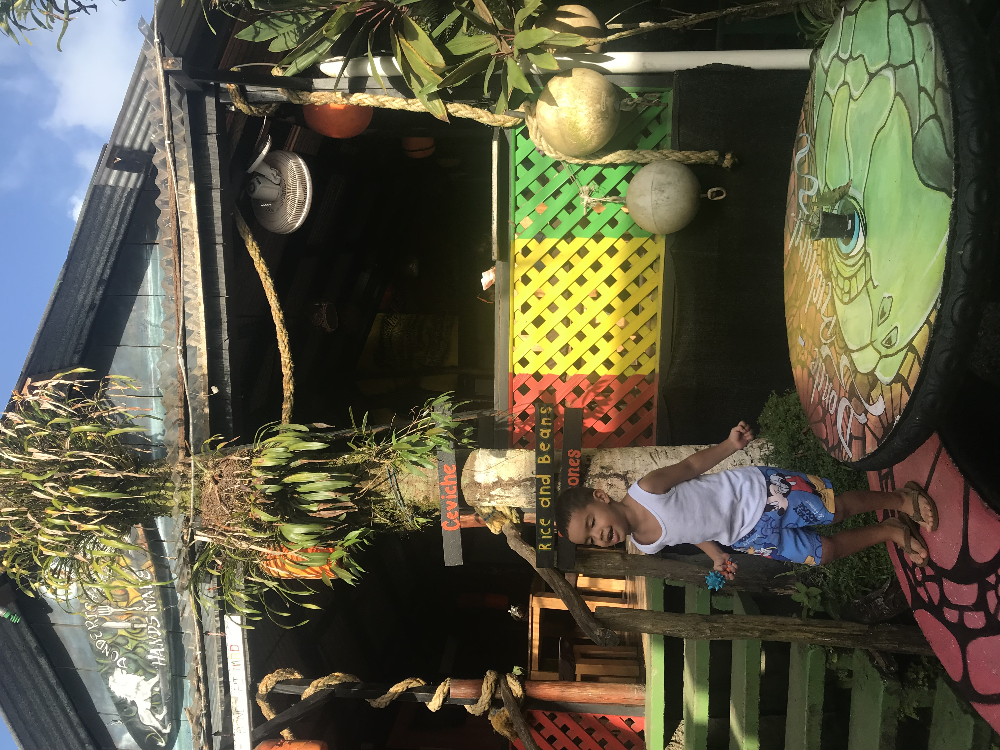
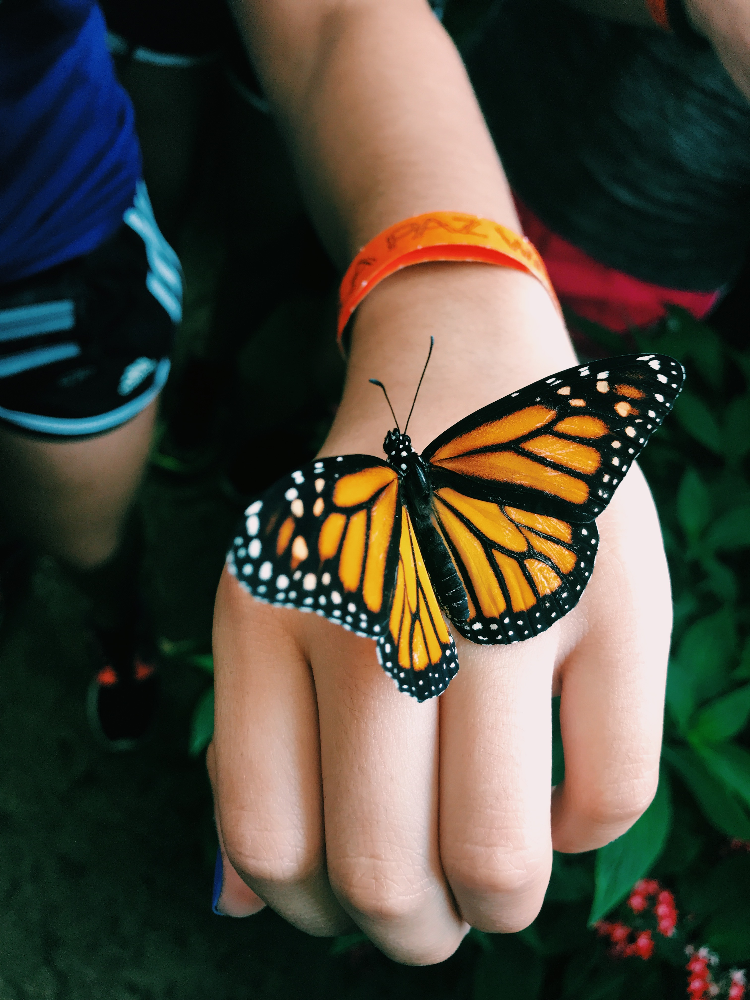
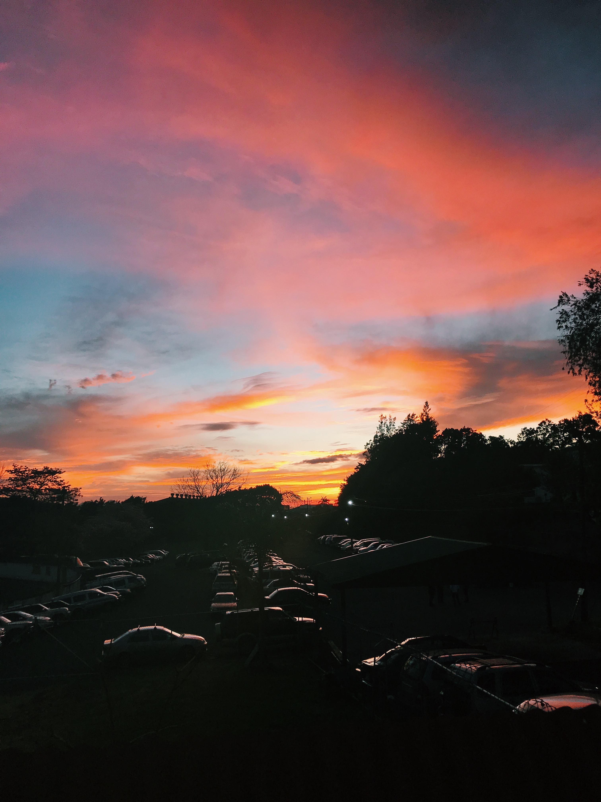
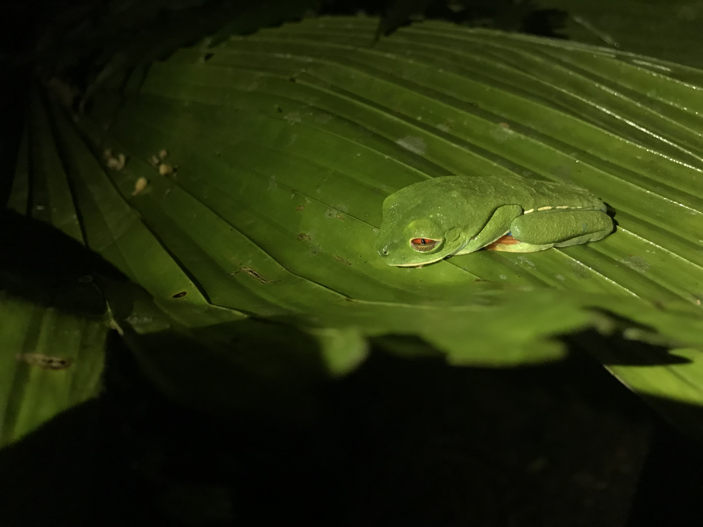
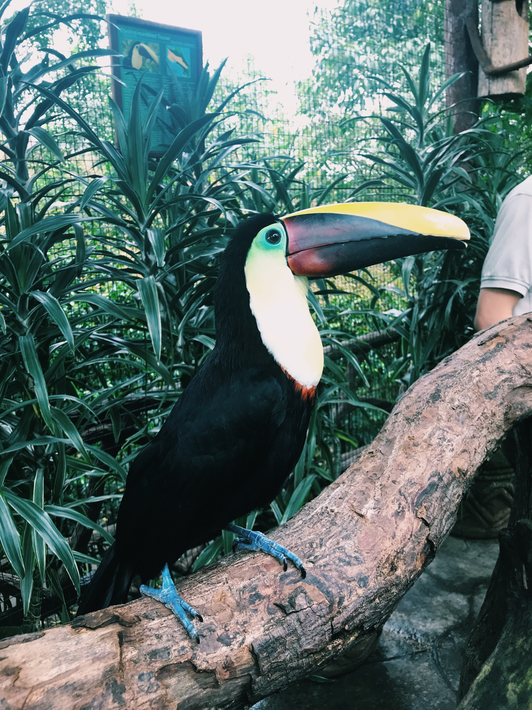
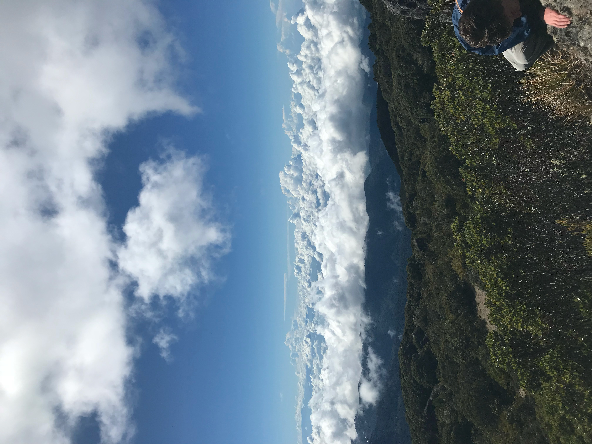
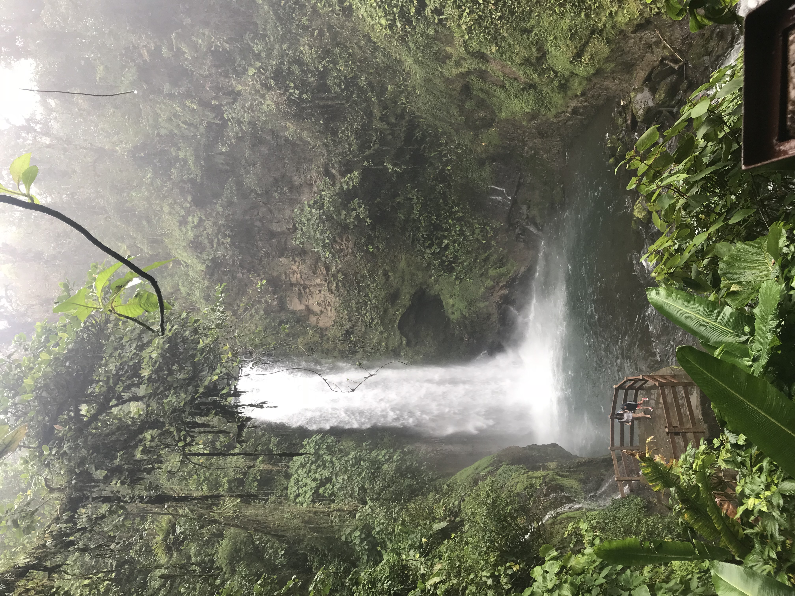
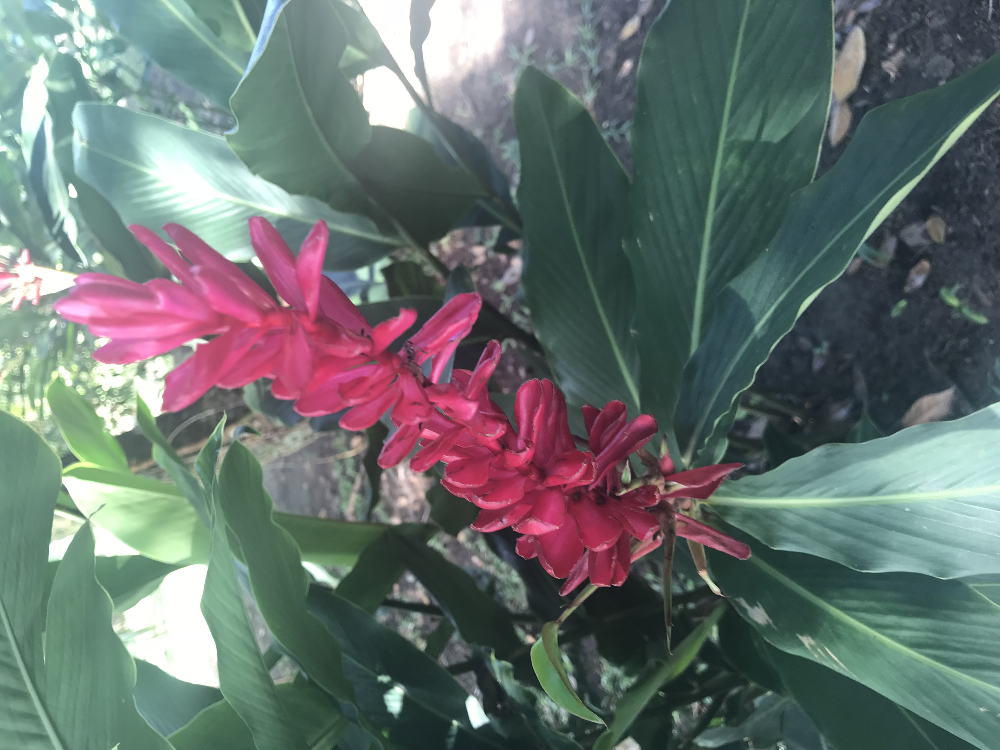
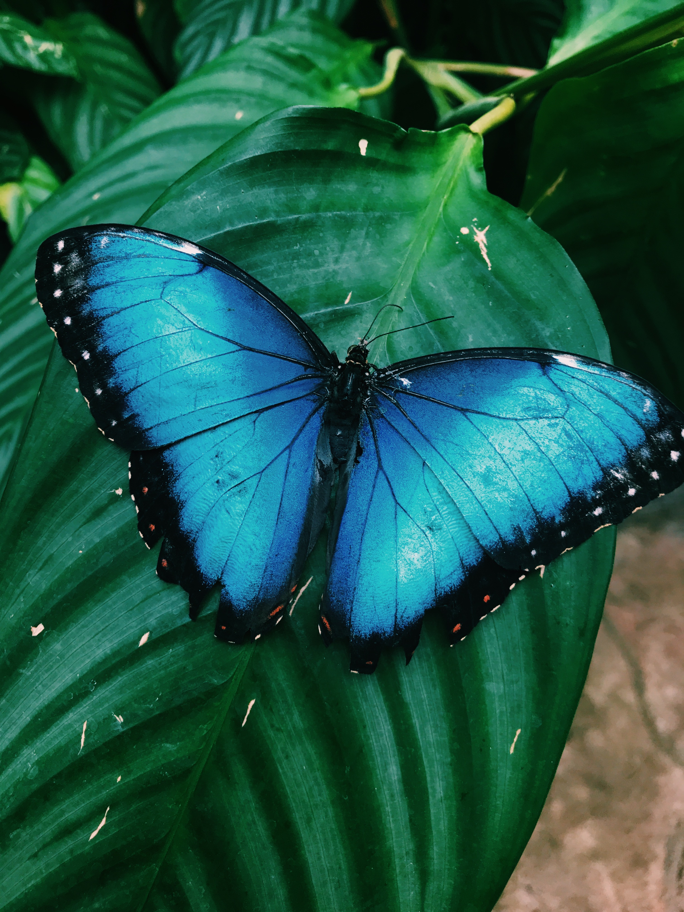
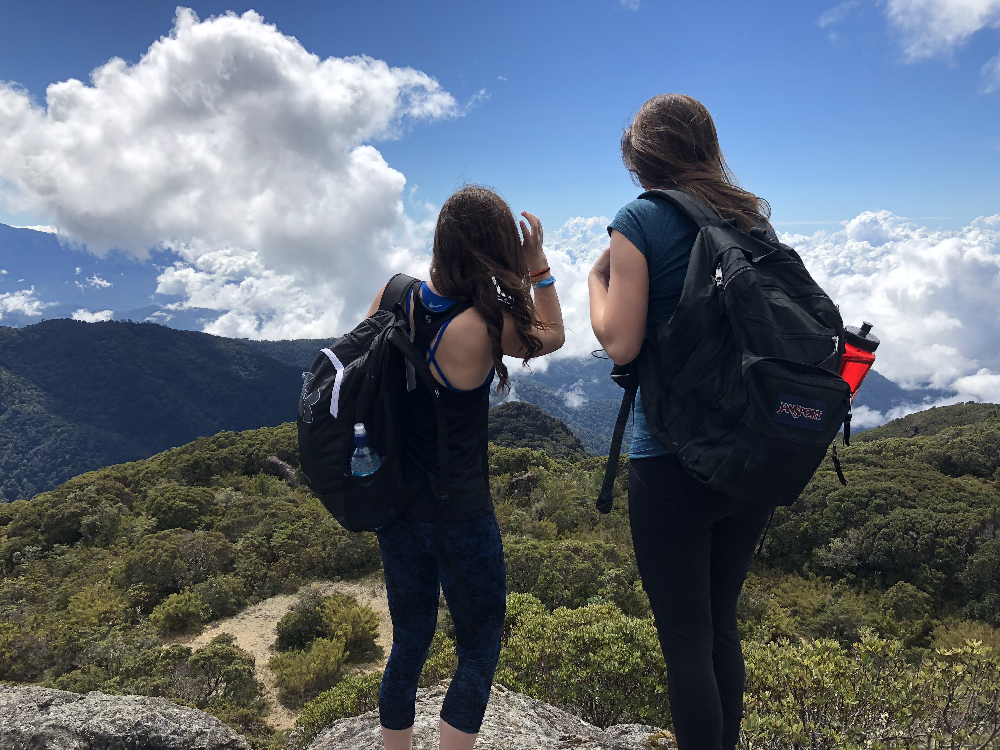

Here are two pictures of butterflies that I saw in the butterfly garden! They flew into our hands!
These are two birds that we saw when venturing around the first park we went to!
We took a long hike around a waterfall garden. There were waterfalls of different sizes everywhere!
We also hiked to the cloud forest where we walked on rocks above the clouds!!
We also went on a night hike where we used our flashlights to find frogs and lizards in the dark!
The sunsets were stunning and the weather was perfect; here is one coloful sunset from the first night of the trip.
We went white water rafting and my teacher fell out of the boat!
We also stayed in multiple units at a high elevation with beautiful flowers everywhere